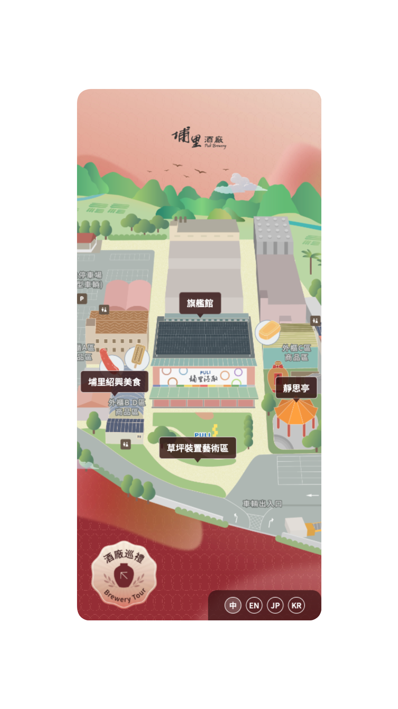
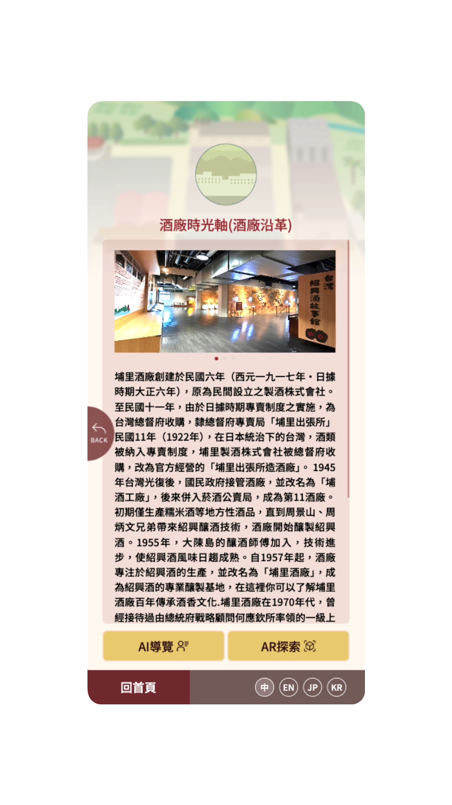
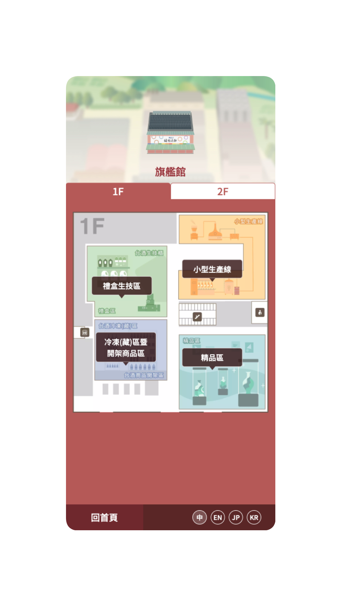
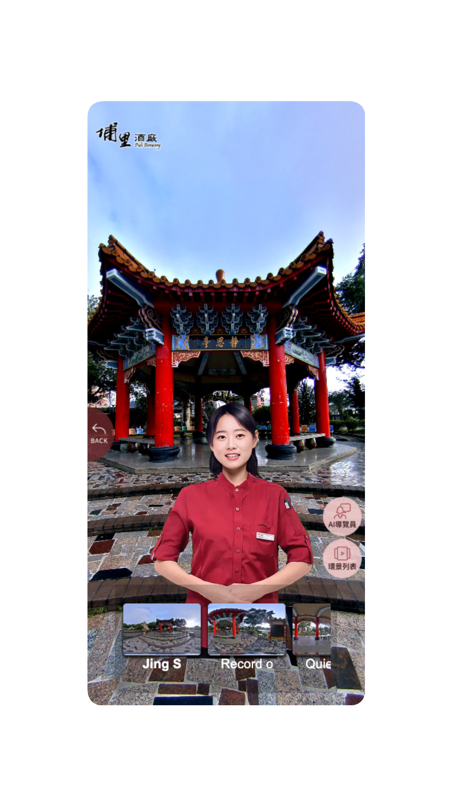
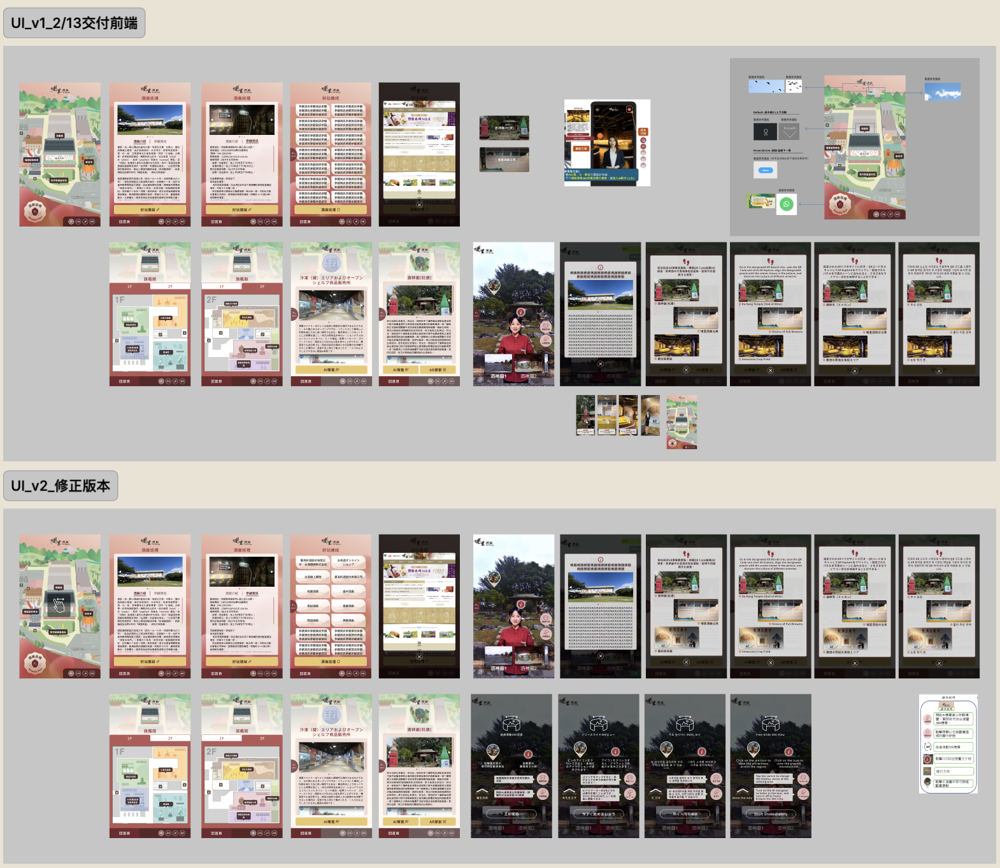
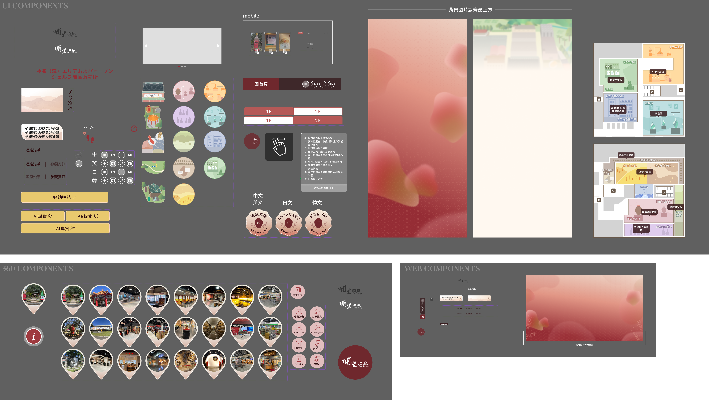
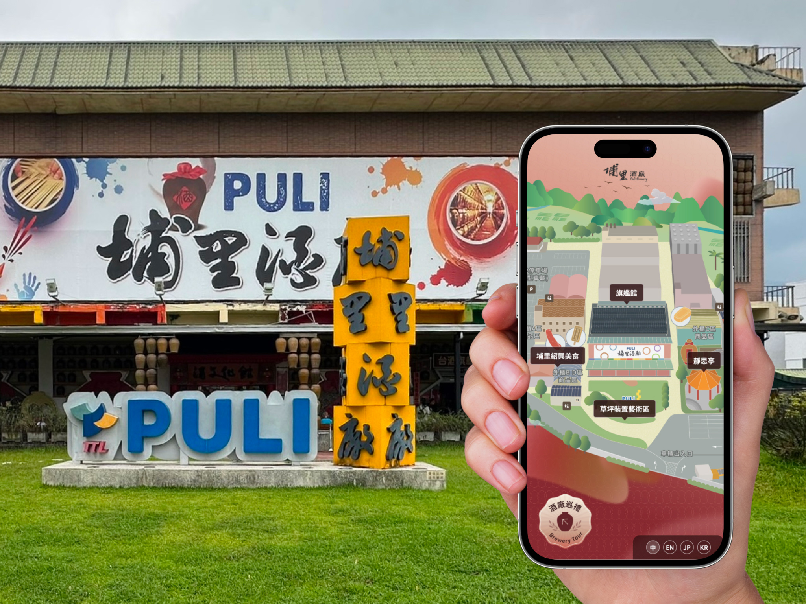
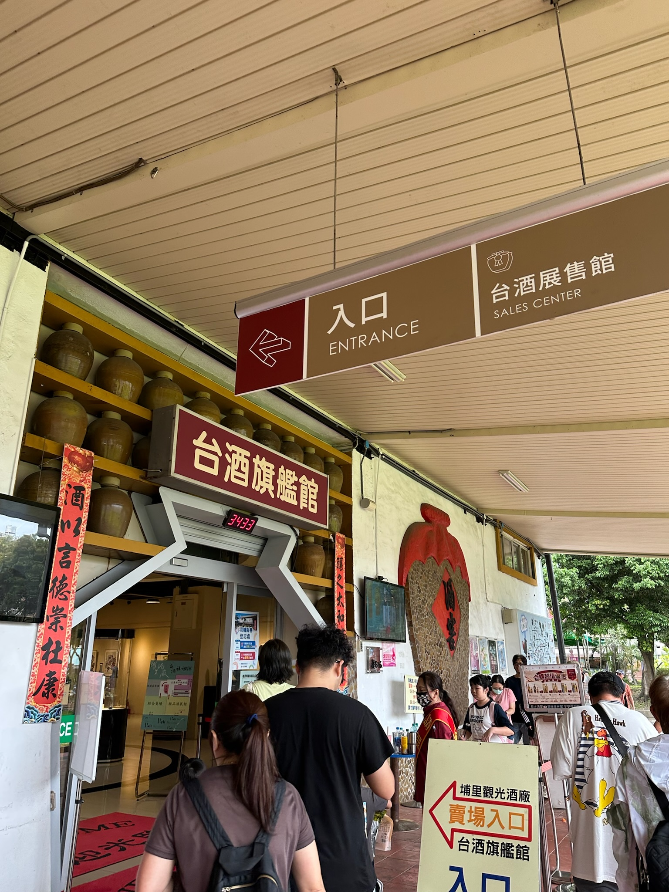

← BACK TO ARCHIVE
CULTURAL TECH · AI · 2024—2025
埔里酒廠
埔里酒廠
AI導覽建置系統
Puli Brewery AI Tour System
VISIT LIVE SITE ↗
Puli Brewery AI Tour System
VISIT LIVE SITE ↗為百年歷史的埔里酒廠打造沉浸式 AI 導覽體驗，整合互動手繪地圖、AR 導覽與 360° 環景，讓走進酒廠的旅人能以最自在的方式認識這片釀造的土地。
酒廠腹地廣闊、動線複雜，不同世代與國籍的遊客對導覽的期待與使用習慣落差很大，如何用一套系統同時服務手機自由行旅客、團體 Kiosk 導覽與 QR Code 隨掃隨看的散客，是最主要的挑戰。
我從使用者旅程切入，先以田野調查釐清 13 個導覽景點的動線與停留行為，再規劃三種裝置入口的介面規範，讓手繪地圖風格延伸到 AR 導覽與 360° 環景中，維持視覺與體驗的一致性，並建立中英日韓四語系內容架構。
專案於 90 個工作天內完成上線，酒廠得以用同一套導覽系統服務不同語言與裝置的訪客，也讓品牌的文化底蘊透過數位體驗被更完整地保留與傳遞。
從手繪園區地圖到樓層導覽、AI 導覽員與 360° 環景探索，這是遊客走進埔里酒廠實際使用的畫面。







從標案提案、線框稿到 UI 版本迭代與多語系元件庫，這是埔里酒廠導覽系統從概念到落地的完整設計歷程。

介面架構線框稿

標案提案階段 · 介面設計提案

UI v1 → v2 · 與工程端溝通迭代的設計力

多語系元件庫規範
以下是埔里酒廠園區的實地拍攝畫面，包含散客 QR Code 隨掃隨看入口的實景。

園區入口 · 導覽 App 地圖使用畫面 QR Code 掃描牌 · 散客隨掃隨看
QR Code 掃描牌 · 散客隨掃隨看

台酒旗艦館入口動線 TTL展示牆 · 百年酒甕陳列
TTL展示牆 · 百年酒甕陳列
 酒甕隧道 · 園區動線一景
酒甕隧道 · 園區動線一景